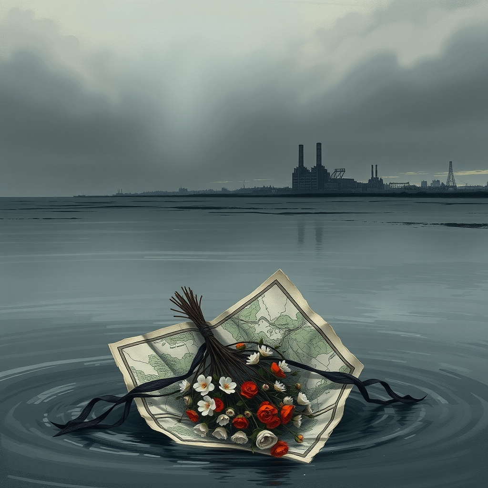
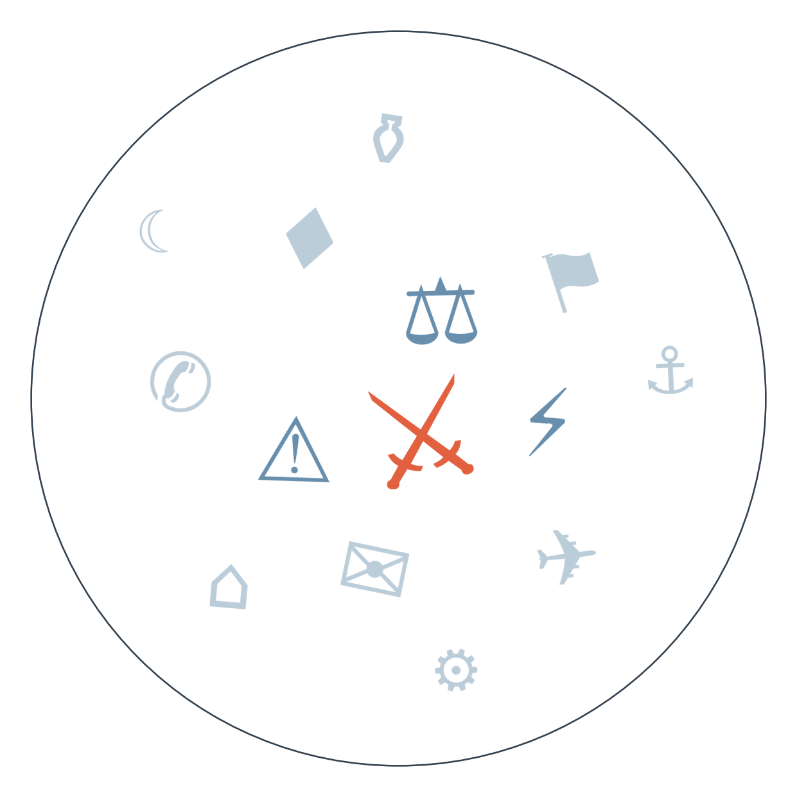

Ранковий бріф · огляд світової преси

Отже, Берлін нарешті назвав винного: Німеччина офіційно звинуватила Росію за дроном з вибухівкою в аеропорту Лейпциг-Галле і закриває російське консульство в Бонні та «Русский дом» у Берліні. Зробили це на три дні раніше обіцяного дедлайну 5 вересня — і, судячи з реакції самої німецької преси, ціна для Москви поки що суто символічна. Тим часом Зеленський попередив авіакомпанії світу, що небо над Росією «де-факто закривається» через українські дрони і застрахувати польоти над нею стане практично неможливо, а Путін у відповідь назвав це «заявкою на державний тероризм» — ще один епізод у сюжеті гібридного тиску Росії на Європу.
США завдали нового раунду ударів по цілях в Ірані, включно з пусковими установками біля Ормузької протоки, а Тегеран, за даними іранських державних медіа, відповів ударами по американських базах у Йорданії, Кувейті та Іраку. Найсуперечливіша деталь дня — удар по весільній церемонії поблизу міста Сірік: іранські медіа кажуть про 11 загиблих, включно з дитиною, Пентагон участі не підтверджує, і це вже другий місяць взаємних ударів без ознак зупинки (сюжет ескалації США-Іран в Ормузькій протоці).
Число жертв повені в Гімалаях перевищило тисячу, зниклими лишаються майже 4000 людей, і рятувальники досі шукають тих, кого вода замкнула в тунелях гідроелектростанцій. Водночас гарна новина — усіх 38 зниклих австралійців врешті знайшли живими, хоча про долю тибетської сторони кордону цифр і досі майже немає (сюжет наслідків повені в Гімалаях).

Сюжет 1: Хто рахує жертви весілля в Сірику
Замовчують: точну кількість жертв весілля — 4, 5 чи 11 залежно від джерела — не підтверджує незалежно жодна сторона.
Чому розходяться: Іран використовує кожну жертву для внутрішньої мобілізації і легітимізації опору, тому вживає сакральну лексику; Al Jazeera орієнтується на глобальну гуманітарну аудиторію і підкреслює цивільний біль, не займаючи сторони явно; американська преса описує операцію мовою власної адміністрації — «доктрина», «політика» — уникаючи візуалізації жертв, бо це послаблює підтримку удару всередині країни; австрійська преса, дистанційована від конфлікту, обирає рамку симетрії й ескалації як найбезпечніший спосіб не звинувачувати жодну зі сторін.
Сюжет 2: Консульство замість відповіді
Замовчують: жодне з проаналізованих джерел не публікує самі докази причетності Росії — усі посилаються на висновки німецької розвідки без деталей.
Чому розходяться: німецька преса розколота між урядовою лінією і критикою праворуч, що заходи занадто слабкі для декларованої серйозності звинувачення; балканські медіа тримають дистанцію, бо для них це віддалений конфлікт без прямих наслідків; Канада, географічно поза зоною ризику, обирає журналістську обережність через юридичну невизначеність звинувачення; литовська преса, навпаки, драматизує загрозу, бо Балтія почувається наступною ціллю гібридних атак.
Кілька тижнів тому — дрон з вибухівкою виявлено біля українського літака в аеропорту Лейпциг/Галле → кінець серпня — Мерц публічно обіцяє до 5 вересня назвати винних і оголосити санкції → 2 вересня — Німеччина офіційно звинувачує Росію, закриває консульство в Бонні та «Русский дом» достроково → до чого веде: питання, чи обмежаться заходи символікою, чи Берлін піде на розширення санкцій до фактичного дедлайну.
Кілька тижнів тому — перший повний обмін ударами США-Іран в Ормузькій протоці → відтоді нафта поступово дорожчає, за даними Kazinform вже вище 91 долара за барель → кінець серпня — на фінансовому саміті G20 Сілуанов вперше з 2022 року зустрічається з Бессентом, санкції проти Росії лишаються чинними → до чого веде: чи справдиться очікування нафтового windfall для Москви, який Moscow Times уже сьогодні називає меншим за прогнозований.
Наприкінці серпня — сербська влада погоджує процедуру державного поховання Ратка Младича → 1 вересня — тисячі людей вшановують його в Банья-Луці → орієнтовно 10 вересня — запланований державний похорон із військовими почестями → до чого веде: Хорватія вже погрожує заблокувати вступ Сербії до ЄС, і похорон може стати першим реальним тестом цієї погрози.
Нафта піднялась вище 91 долара за барель на тлі ударів США по Ірану, за даними казахстанського державного Kazinform.
Азійські біржі відреагували падінням: KOSPI Південної Кореї відкрився нижче більш ніж на 3%.
Volkswagen погодив закриття чотирьох заводів у Німеччині — ринки чекають на масштаб супутніх звільнень.
ФРС наближається до засідання 12 вересня: Бессент і Уорш другий тиждень поспіль попереджають про ризики розпродажу японських активів.
Bild нагнітає очікування «швидкої відповіді Росії» на закриття консульства словами колишнього керівника канцелярії, тоді як серйозна німецька преса — Die Welt, FAZ — обговорює радше обмеженість самих санкцій. Daily Mail тим часом не згадує ні Іран, ні дрон у Лейпцигу жодним рядком: британський таблоїд повністю зайнятий прощальним туром Аріани Гранде і сімейним концертом Бекхемів.
Дрон з вибухівкою у Лейпцигу — деталі в «Ціна за дрон» (ЩО З ЧОГО ВИПЛИВАЄ); офіційне звинувачення Росії Німеччиною посилює міжнародну доказову базу проти гібридної війни РФ і зміцнює аргументи Києва в перемовинах про санкції.
Попередження Зеленського про небезпеку неба над Росією для авіакомпаній означає ризик зростання страхових тарифів для рейсів, що досі літають повз російський повітряний простір, — непрямий економічний тиск на Москву.
Ринок приватної ППО в Україні (від 150 тисяч євро за об'єкт) перетворюється на експортний продукт — потенційне джерело валютних надходжень і технологічного досвіду для повоєнної економіки.
Про тибетську сторону гімалайської повені цифр практично немає, попри масштаб трагедії по обидва боки кордону — мовчать саме китайські державні медіа, які звужують кадр до прикордонної зони і уникають окремої статистики по Тибетському автономному району; тема надто чутлива для показу вразливості автономії.
Точна кількість жертв удару по весіллю в Ірані (4, 5 чи 11 людей) не перевіряється незалежно жодною стороною — мовчать усі: західна преса переказує іранські державні медіа без верифікації, а Пентагон взагалі не підтверджує деталей операції; для перевірки потрібен доступ до зони удару, якого немає в жодного видання.
Реакція правозахисників на щоденне вшанування Младича в Банья-Луці практично не потрапляє в стрічки за межами Балкан — тема тихо чекає кульмінації 10 вересня; редакції притримують коментарі до самого похорону, а не проміжних подій.
Ціни на нафту продовжать рух до позначки 95-100 доларів за барель, якщо обмін ударами США-Іран не зупиниться найближчим тижнем. На чому ґрунтується: одне державне джерело (Kazinform, 91 долар) плюс загальна ринкова логіка без прямого підтвердження від нафтових аналітиків у дайджесті.
Ескалація в Ормузькій протоці має шанси перейти в пряме зіткнення флотів, а не лише обмін ударами по базах. На чому ґрунтується: два джерела (Der Standard, ORF) фіксують риторику Трампа про «ще жорсткіші» удари без деескалаційних сигналів з жодного боку.
Наші:
Рахунок: 1 з 3 (базово 1 з 3) — референдум в Ісландії не справдився, дата похорону короля Норвегії справдилась достроково, спільна заява на ШОС щодо війни в Україні чи санкцій не прозвучала.
Німеччина оголосить додаткові санкції проти Росії понад закриття консульства в Бонні до 5 вересня
США та Іран проведуть ще один прямий обмін ударами до 16 вересня
Тристоронній саміт Путін-Трамп-Зеленський не відбудеться до 16 вересня
Кажуть інші:
Дэвід-Фокс (історик, директор IWM, за Der Standard): Путін не може просто зупинити війну, шанси на перемир'я в Україні мізерні, ризики для Європи зростатимуть — горизонт не вказано.
10 вересня (орієнтовно) — запланований державний похорон Ратка Младича з військовими почестями.
Базова лінія у прогнозах. Відсоток «базово» — це ймовірність події за інерцією, якщо ніхто нічого не робитиме й нічого не зміниться. Друге число — наша впевненість. Прогноз має сенс лише тоді, коли ці числа розходяться: збіг означає, що ми просто описали поточний стан.
Відсотки в карті уваги. Частка країни в денному обсязі зібраних матеріалів. Не показник важливості події, а показник того, скільки місця країна зайняла в новинному потоці за добу. Різкий стрибок частки зазвичай означає, що в країні щось відбувається.
Стрічки, які не відповіли. Не відповіли (12): Caixin, The Paper, Yicai, HotNews, Suspilne, Australian Financial Review, Kathimerini, Corriere della Sera, Il Foglio, Milenio, China Times, Hromadske.